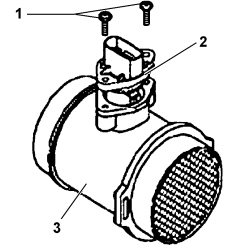

1056B MULTI-POINT INJECTION SYSTEM (MPI)
- Path
- Procedures > 10 ENGINE > 1056 PETROL INJECTION SYSTEM > 1056B MULTI-POINT INJECTION SYSTEM (MPI)
- Kind
- repair procedure (removal / refitting; the operation number is the code)
- Applies to
- all engines; all production periods
- Interactive page
- https://sloeber94.github.io/elrnDB-fUlss/en/#/179007015
Subtopics (22)
- 1056B10 AIR FLOW METER - R + R
- 1056B14 THROTTLE CASE - R + R
- 1056B15 THROTTLE BODY INTERGRAL WITH MDS - R R
- 1056B40 THROTTLE CASE THROTTLE POSITION SWITCH - R + R
- 1056B44 AIR PRESSURE SENSOR - R.R.
- 1056B46 INTAKE AIR TEMPERATURE SENSOR - R + R
- 1056B50 COOLANT TEMPERATURE SENSOR - R + R
- 1056B51 CAM ANGLE SENSOR R + R
- 1056B55 RIGHT HEAD CAM ANGLE SENSOR - R.R.
- 1056B57 LEFT HEAD CAM ANGLE SENSOR - R.R.
- 1056B59 RIGHT HEAD TIMING PHASE TRANSFORMER SOLENOID - R.R.
- 1056B60 SINGLE FUEL MANIFOLD PIPE, WITH INJECTORS - R + R
- 1056B62 L/H AND R/H FUEL PIPE ASSEMBLY - WITH INJECTORS - R + R
- 1056B63 LEFT HEAD PHASE TRANSFORMER SOLENOID - R.R.
- 1056B66 L/H FUEL MANIFOLD PIPE, WITH INJECTORS - R + R
- 1056B67 R/H FUEL MANIFOLD PIPE, WITH INJECTORS - R + R
- 1056B68 SET OF INJECTORS - R + R WITH FUEL MANIFOLD PIPE REMOVED - INCLUDES SEAL REPLACEMENT
- 1056B70 INJECTOR (ONE) - R + R WITH FUEL MANIFOLD PIPE REMOVED - INCLUDES SEAL REPLACEMNT
- 1056B79 INJECTION/IGNITION CONTRO UNIT GUARD - R R
- 1056B82 INJECTION/IGNITION SYSTEM E.C.U. (ONE) - R + R
- 1056B90 SYSTEM CABLE BUNDLE - R + R
- 1056B91 ELECTRICAL CONNECTION BRIDGE BETWEEN LEFT AND RIGHT HEADS - R.R.
Applies to: engines: 2.0 16v, 3.0 24V V6; all production periods

Topics that link to this page (10)
- E4010 INSTRUMENT PANEL WIRING DIAGRAM
- E4010 INSTRUMENT PANEL COMPONENT LOCATION
- E5020 ENGINE COOLING WIRING DIAGRAM
- E5020 ENGINE COOLING COMPONENT LOCATION
- E5050 DIESEL ENGINE ELECTRONIC MANAGEMENT WIRING DIAGRAM
- E5050 DIESEL ENGINE ELECTRONIC MANAGEMENT COMPONENT LOCATION
- E5050 DIESEL ENGINE ELECTRONIC MANAGEMENT WIRING DIAGRAM
- E5050 DIESEL ENGINE ELECTRONIC MANAGEMENT COMPONENT LOCATION
- E5050 DIESEL ENGINE ELECTRONIC MANAGEMENT WIRING DIAGRAM
- E5050 DIESEL ENGINE ELECTRONIC MANAGEMENT COMPONENT LOCATION